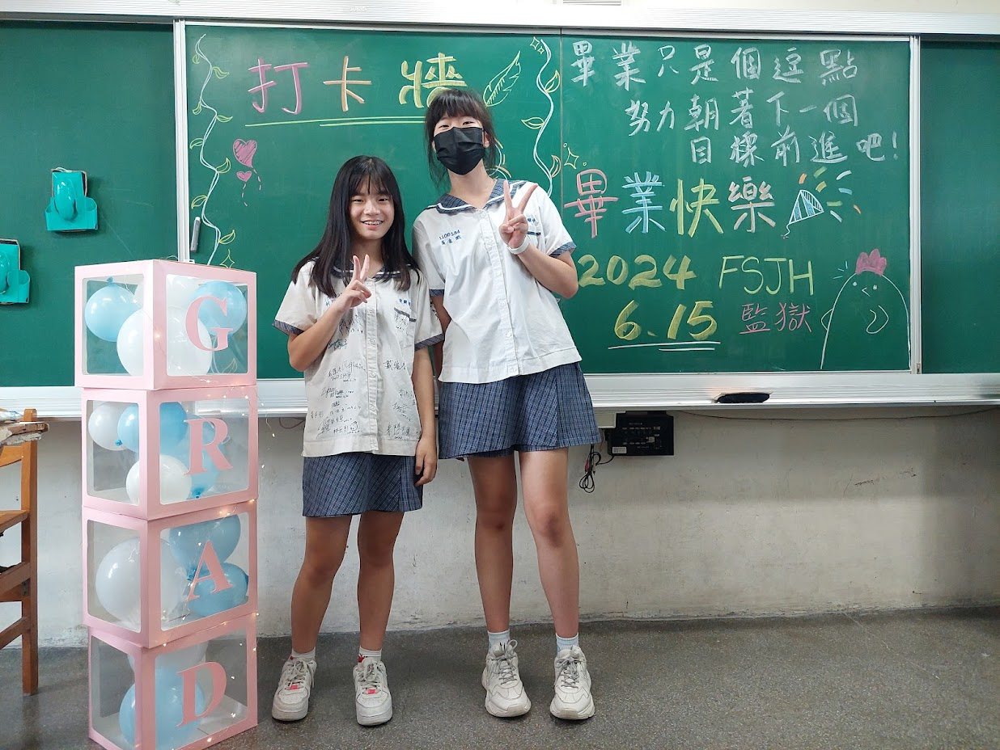
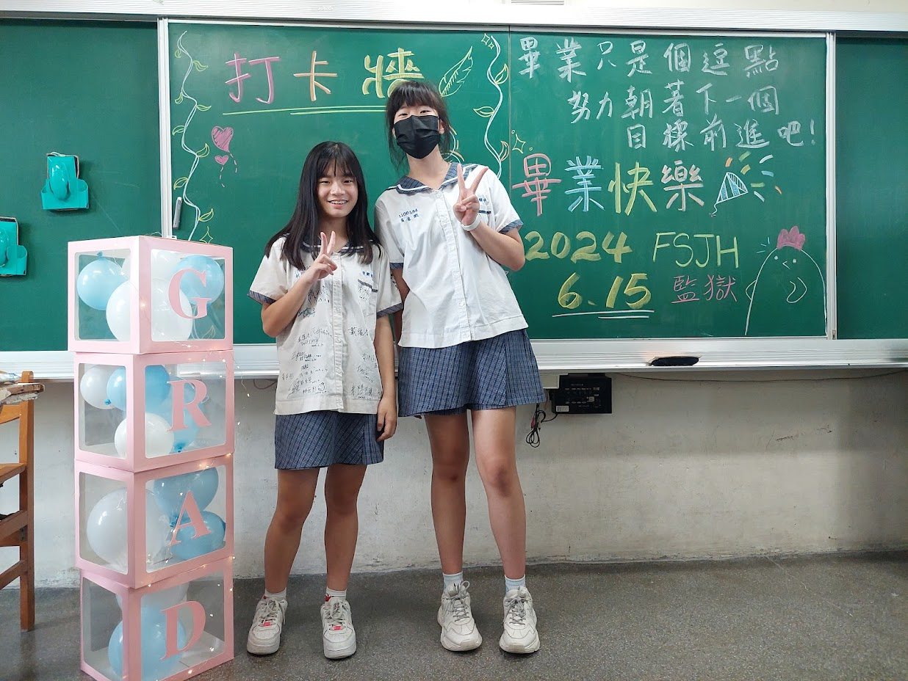

To:比我還像大小姐的幼稚鬼
不知不覺間三年就過去了 畢業的時間也近了
你也知道在一年級的時候我還是很嚴肅(大部分人這麼覺得，到底是為什麼呢？) 但是跟妳熟了以後我覺得我就變得完全不一樣了
也許可以說是妳讓我改變了吧？ 後來我漸漸發現妳和我有很多地方很像
例如不吃的東西都很多(挑食) 也增加了奇怪的默契(？
還有堪稱真心話Pro Max的#0幾 讓我知道很多妳的秘密ㄛˊ(所以妳要小心一點齁)
我也很開心我的知識門診有幫助到妳在會考前克服問題 最後搶到28.8分
雖然妳平常被認證為很顛 可是這樣也提供了妳一個情緒發洩的管道 不會像我一樣把情緒都往心裡壓
到女中後也許你會遇到很多的壓力 希望妳還是能把這些情緒發洩出來 才不會內傷
喔對了 看完這篇之後不要太感動到眼淚嘩啦嘩啦地流下來欸
總之祝你以後面對任何事情都可以平安順利 而且也要「Trust Yourself」喔！
ps.你的卡片我看完了 二年級的事怎麼能不認帳:/
畢業快樂！
不是大小姐的吳瑋宸 2024.6.15


 
